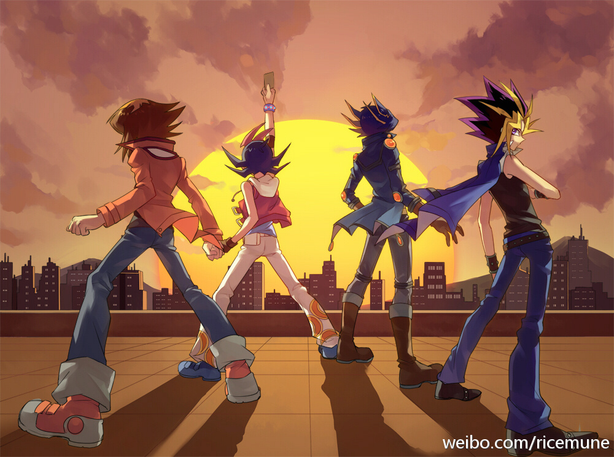

墙另一侧的女孩
1
文章作者/大斯 文章发表时间:2016-3-21 11:11
听说煎生煎包时，老师傅靠听觉来判断什么时候加水。光有油的声音是嘎嘣嘎嘣的，快烧干时是嘎嘎嘎，加过水就变成哗啦啦，然后吱吱吱。有次我和妻子经过一间卖生煎的店子，驻足倾听了会。“我什么都没听出来，”我对妻子说，“鸭子的嘎嘎声也好，鸽子的咕咕也好，我什么都没听出来。”妻子轻轻握了握我的手，说她听得很清楚。我用不以为然的神情幼稚地表达我的不服气。
我很爱我的妻子。她是我的初恋，我的青春。听起来整个就很俗套。但如果有谁的青春不够俗套，那就很糟糕。
十年前的初中盛行台湾流行文化。SHE林俊杰梁静茹MVP情人。女生聚在一起唱《分手快乐》，场面十分温馨。男生聚在一起聊色情笑话 ，拆游戏王卡牌。在一片快乐祥和勤勉温馨的学习氛围中，小霸王阿晶不知从哪个偶像剧得来灵感，让我们约定十年后必须实现彼此的一个愿望。愿望不光得写，还得读出来，反正阿晶说的就是规矩。
有的愿望是搜集完全套游戏王卡牌，有的希望撒尿时射程最远，但被阿晶用力拍后脑勺给毙了：“妈的，这个要我们怎么帮你啊!重写啦!”后来改成要做泡妞高手。而有人的愿望，居然是要娶阿晶。
男生们开始嘘他和起哄，说他嫌命长。他们扭作一团时，阿晶作为唯一的女生——如果算的话——冷眼旁观着这群荷尔蒙旺盛的幼稚男孩，伸手把大家的纸条扯过来，丢进怀里的纸盒。